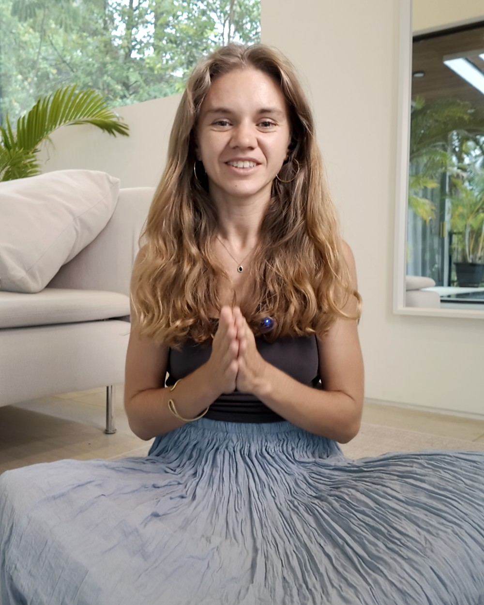
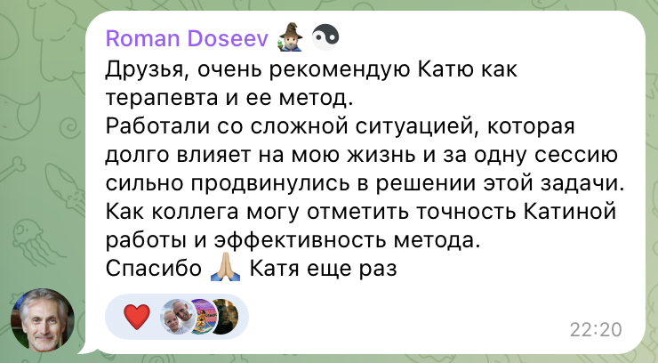
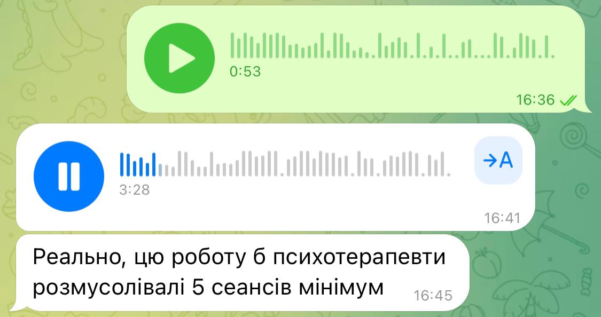
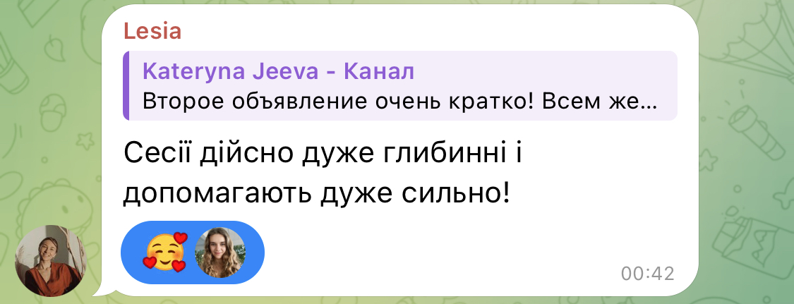
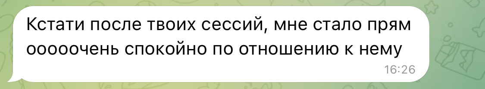

Робота з емоціями
Ви приходите з тим, що вас турбує, а я допомагаю перетворити це на чіткий запит. Ми знаходимо, звідки росте проблема, і знімаємо емоційний заряд із тих ситуацій, де вона почалася. Працюємо точково: не перестрибуємо з теми на тему, а залишаємося з тим, із чим ви прийшли.
«Працювали зі складною ситуацією, яка довго впливала на моє життя, — і за одну сесію сильно просунулися. Як колега відзначу точність Катиної роботи.»

Що таке РЕТ
РЕТ (ресурсно-емоційна трансформація) дає змогу глибоко розібрати вашу проблему й розкласти її на аспекти. За кожним аспектом зазвичай стоїть свій емоційний стан — ми називаємо його емоційним шаблоном.
Такі шаблони не беруться нізвідки: наші реакції складаються в дитинстві, найчастіше до 7 років. Ми знаходимо конкретну ситуацію, у якій з’явився шаблон, і знімаємо з неї емоційний заряд. Після цього проблема перестає бути проблемою і стає просто задачею: емоції більше вас не блокують.
Це не роки розмов: майже будь-який запит можна зрушити з мертвої точки вже за одну сесію, а глибше змінити — за 3–5.
З чим можна прийти на сесію
Не обов’язково заздалегідь знати, з чим саме ви хочете попрацювати. Якщо щось тривожить, заважає жити або повторюється знову й знову — цього достатньо. На початку сесії ми разом розберемося й сформулюємо запит.
Стосунки
- Сварки й конфлікти з партнером, дітьми, батьками, колегами
- Давня образа, яка не відпускає
- Ревнощі й заздрість
- Розставання, зрада, коли вас покинули
- Близька людина робить те, що вас ранить, — працюємо з вашими почуттями
Втрата й самотність
- Горе після смерті близької людини
- Самотність, відчуття, що ви нікому не потрібні або вас відкинули
- Життя далеко від дому, коли поруч немає своїх
Страхи й тривога
- Тривога, паніка, постійне занепокоєння за майбутнє
- Конкретні страхи, від яких завмирає все всередині
- Страх за близьких, страх смерті
- Страх помилитися
Емоції, з якими важко впоратися
- Злість, роздратування, спалахи гніву
- Почуття провини, зокрема перед дитиною
- Сором і невпевненість у собі
- Апатія, жалість до себе, відчуття «так буде завжди»
Гроші й робота
- Постійна нестача грошей, сварки через гроші, сором за свої фінанси
- Переконання про гроші, які заважають
- Несправедливість на роботі, критика, звільнення
Звички й дії
- «Хочу, але не можу» і «треба, але не хочу»: відкладання, лінь
- Звички, які важко зупинити, і залежності
Вибір і глухий кут
- Не можете вирішити: піти чи залишитися, А чи Б
- Відчуття, що ви «як у клітці» і виходу немає
Ставлення до себе
- «Я недостатньо гарна / хороша», болюча реакція на критику зовнішності
- Дитячі заборони й переконання, які досі керують життям
Що змінюється після сесій
У кожного свій шлях, але ось що клієнти помічають найчастіше.
«Зустріч із Катею вийшла неймовірно легкою — і за процесом, і за післясмаком. Після сесії я без зусиль зробила те, над чим ми працювали.»
Стара реакція більше не спрацьовує
Ситуації й люди, які раніше зачіпали за живе, сприймаються спокійніше.
Спогади перестають ранити
Ви пам’ятаєте, що сталося, але біль і напруга, які ви носили в собі, відходять.
Повертаються сили й легкість
Енергія, яка йшла на переживання, звільняється для життя.
Легше діяти
Те, що довго відкладалося, нарешті робиться — легко, без насилля над собою.
Відгуки








Скріншоти справжніх повідомлень і коментарів клієнтів. Гортайте вбік, щоб побачити всі.
Про мене
Мене звати Катерина. Я знайшла метод РЕТ у 2018–2019 роках — спершу як клієнтка. До того я ходила до різних фахівців з різними запитами й пробувала різні підходи. Але щоразу, коли розмова торкалася найболючішого досвіду з мого дитинства, ставало тільки важче: проговорювання ніби знову занурювало мене в той біль.
У РЕТ сталося навпаки. Після кожного опрацювання спогади ставали легшими й менш болісними — ніби знімалися цілі шари. Я пам’ятаю, що відбувалося, але біль і жах, які я носила в тілі, пішли. За кілька сесій змінилося більше, ніж за місяці до того.
Мене вразило, наскільки точно працює метод: ми не обговорюємо все підряд, а беремо конкретний запит, розкладаємо його на аспекти й знаходимо саме той досвід, з якого все почалося.
У 2020 році я навчилася методу в тренерки Анни Аксьонової, і відтоді провела понад 300 сесій для більш ніж 50 клієнтів. Також викладаю кундаліні йогу на Пангані. Проводжу сесії українською, англійською та російською.
 Сертифікат «Практик» РЕТ2020 · 44 години навчання · переглянути
Сертифікат «Практик» РЕТ2020 · 44 години навчання · переглянути
Ціни
Онлайн або наживо на Пангані
Знайомство
15 хвилин, онлайн Безкоштовно Познайомимося й вирішимо, з чого початиОдна сесія
Онлайн, 1,5 години 2 000 грн ≈ 40 €4 сесії
Онлайн, щоб глибше пропрацювати тему 6 000 грн ≈ 120 € 1 500 грн за сесію — економія 2 000 грнНаживо
Для тих, хто на Пангані · 1,5 години 3 000 бат ≈ 80 €Часті запитання
Те, що зазвичай хвилює перед першою сесією
Скільки сесій мені знадобиться?
У кожного по-своєму: це залежить від запиту й від того, скільки тем ви захочете пропрацювати. Зазвичай вистачає від 1 до 5 сесій. На безкоштовному знайомстві я підкажу, чого очікувати саме у вашому випадку.
Чи потрібно все детально розповідати?
Ні. Достатньо того, чим ви готові поділитися. Ви самі вирішуєте, скільки подробиць говорити вголос.
А якщо стане важко або я плакатиму?
Це нормально: сльози часто означають, що емоція нарешті виходить. Я поруч увесь час, ми рухаємося у вашому темпі, і завершуємо сесію в спокійному стані.
Ви психолог чи психотерапевт?
Ні. Я сертифікований практик методу РЕТ. Це не психотерапія: ми не розбираємо минуле в довгих розмовах, а знімаємо емоційний заряд із конкретних ситуацій.
Чи працює це онлайн?
Так. Сесії проходять аудіодзвінком, і багатьом так навіть легше: ви вдома, у безпечному місці, й можете повністю зосередитися на собі. Готуватися не потрібно — лише тихе місце й навушники.
Коли можна провести сесію?
Я живу в Таїланді, але працюю з людьми в різних країнах. Напишіть мені — підберемо час, зручний нам обом.
Як проходить оплата?
Перед сесією, будь-яким способом із блоку «Ціни». Якщо щось зміниться, сесію можна безкоштовно перенести, попередивши за 24 години.
Це конфіденційно?
Так. Усе, що ви розповідаєте, залишається між нами.
Кому РЕТ не підходить?
РЕТ не замінює психологічну, психіатричну чи медичну допомогу. Якщо у вас гостра криза, діагностований психічний розлад або ви приймаєте психіатричні препарати, спершу зверніться до лікаря.
Почнімо зі знайомства
Напишіть у двох словах, що вас турбує. На безкоштовному знайомстві я чесно скажу, чим можу допомогти і скільки сесій може знадобитися. Пишіть, навіть якщо сумніваєтеся.